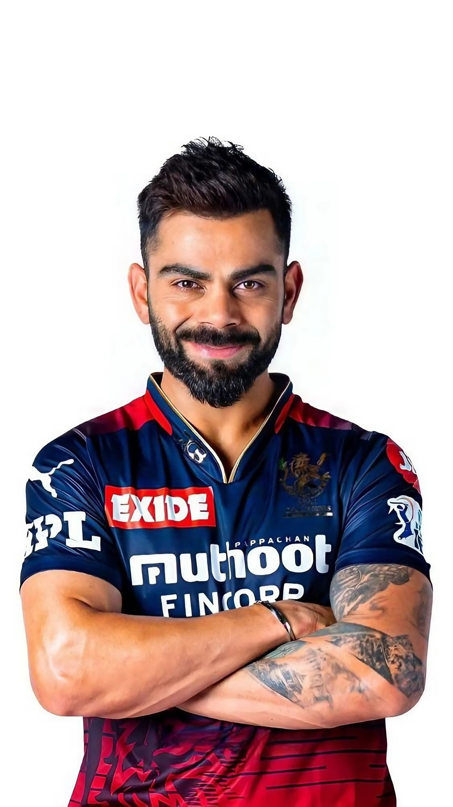
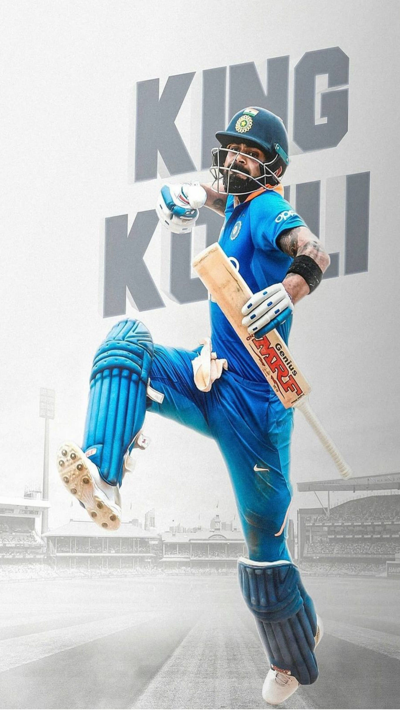

Virat Kohli is an Indian cricketer and former captain of the Indian national team. He is regarded as one of the greatest batsmen in the history of the sport.
Biography
Born on November 5, 1988, in Delhi, India, Virat Kohli showed his potential at a young age. He led India to victory in the 2008 Under-19 World Cup and soon debuted for the senior team. Kohli’s passion, aggression, and unparalleled skill with the bat have made him a force to reckon with in international cricket.
Major Achievements
- Most centuries in run chases in One-Day Internationals (ODIs).
- Fastest to 8,000, 9,000, 10,000, 11,000, and 12,000 runs in ODIs.
- Leading India to multiple Test series victories.
- Winner of the ICC Cricketer of the Year award multiple times.
- Captained the Indian national cricket team from 2013 to 2021.
Photos

